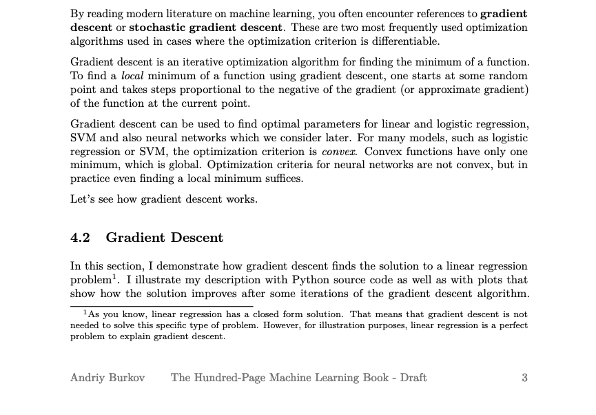
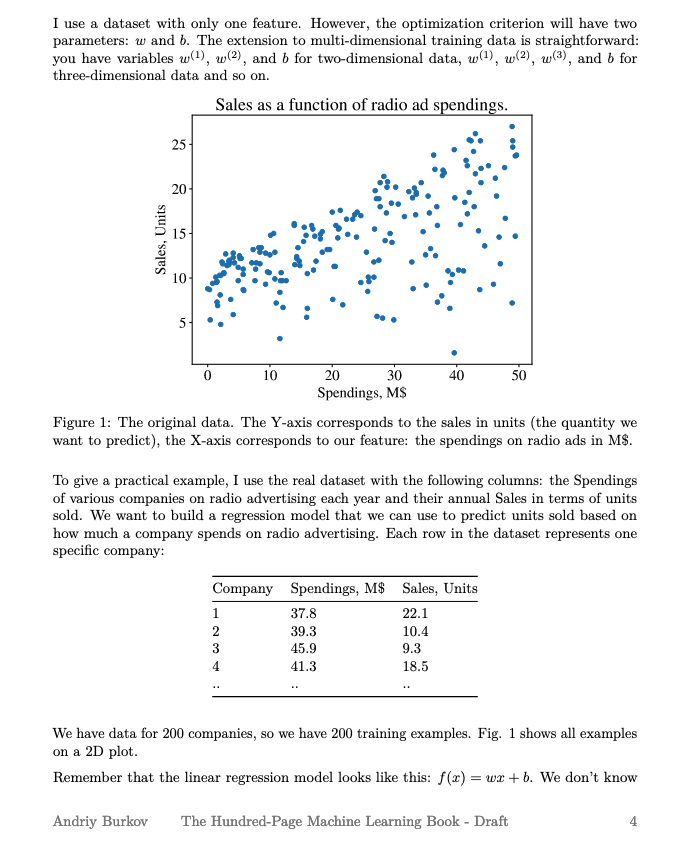
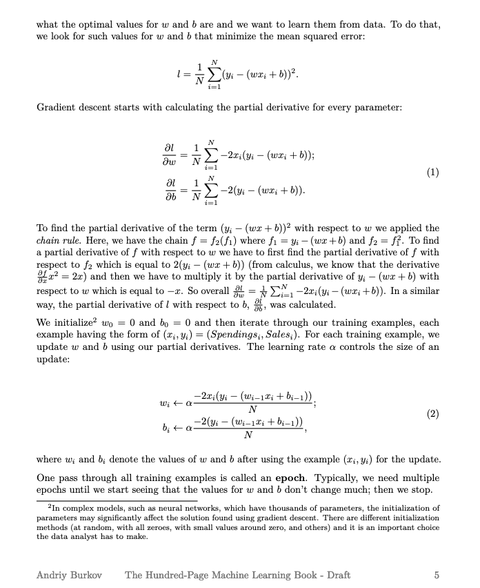
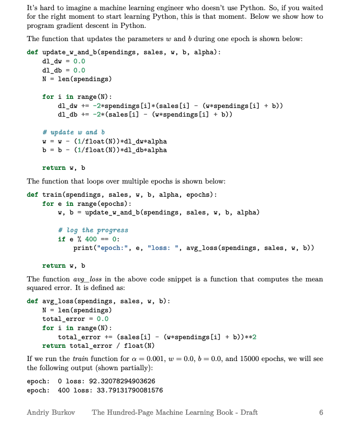
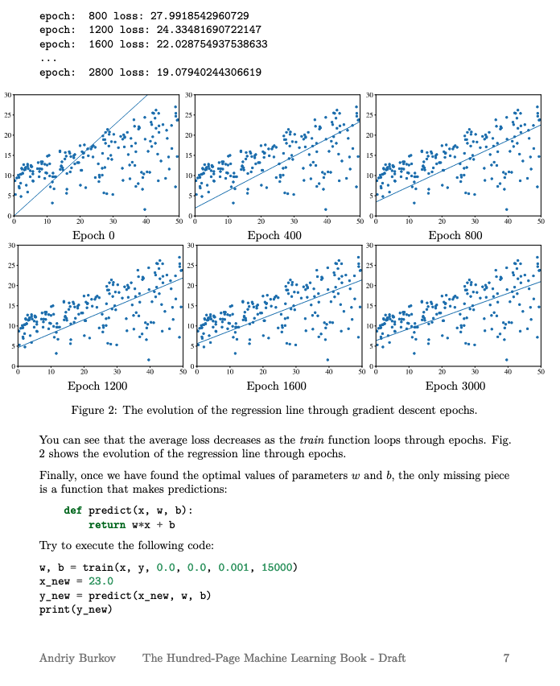
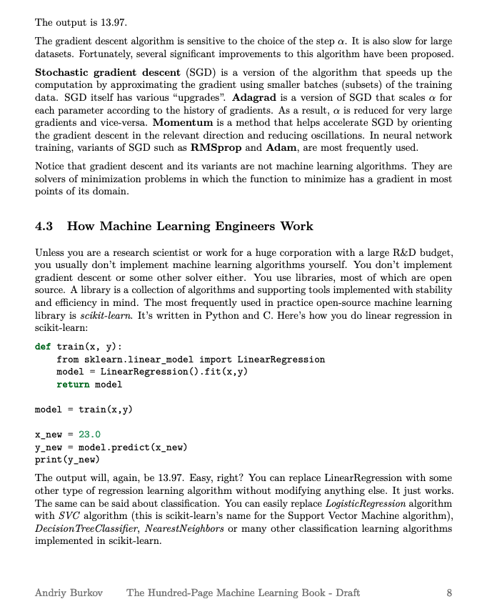

Steepest Descent¶
Singer, Y (2016) “Gradient Descent Methods” lecture notes from AM 221: Advanced Optimization
The following are from Burkov, A (2019) excerpts from The Hundred-Page Machine Learning Book - Draft






Using Packages¶
Unconstrained Minimization¶
Example problem is
\[f(x) = \sum_{i = 1}^{N-1} \:100(x_i - x_{i-1}^{2})\]
Nelder-Mead Method¶
Function calls only
Needs a starting vector that is non-degenerate
import numpy as np
from scipy.optimize import minimize
def rosen(x):
"""The Rosenbrock function"""
return sum(100.0*(x[1:]-x[:-1]**2.0)**2.0 + (1-x[:-1])**2.0)
x0 = np.array([1.3, 0.7, 0.8, 1.9, 1.2])
res = minimize(rosen, x0, method='nelder-mead',options={'disp': True})
print(res.x)
Optimization terminated successfully.
Current function value: 0.000066
Iterations: 141
Function evaluations: 243
[0.99910115 0.99820923 0.99646346 0.99297555 0.98600385]
Powell’s Direction Set Method¶
Function calls only
Needs a starting vector that is non-degenerate
import numpy as np
from scipy.optimize import minimize
def rosen(x):
"""The Rosenbrock function"""
return sum(100.0*(x[1:]-x[:-1]**2.0)**2.0 + (1-x[:-1])**2.0)
x0 = np.array([1.3, 0.7, 0.8, 1.9, 1.2])
res = minimize(rosen, x0, method='powell',options={'disp': True})
print(res.x)
Optimization terminated successfully.
Current function value: 0.000000
Iterations: 18
Function evaluations: 1084
[1. 1. 1. 1. 1.]
def rosen(x):
nminus1 = len(x)-1
acc = 0.0
for i in range(nminus1):
acc = acc + 100*(x[i+1]-x[i]**2)
return acc
import numpy as np
from scipy.optimize import minimize
#Rosenbrock Function
def fun_rosenbrock(x):
return np.array([10 * (x[1] - x[0]**2), (1 - x[0])])
from scipy.optimize import least_squares
input = np.array([2, 2])
res = least_squares(fun_rosenbrock, input)
print(res)
active_mask: array([0., 0.])
cost: 2.2211364862629114e-29
fun: array([-6.66133815e-15, -2.22044605e-16])
grad: array([ 1.33448809e-13, -6.66133815e-14])
jac: array([[-20.00000015, 10. ],
[ -1. , 0. ]])
message: '`gtol` termination condition is satisfied.'
nfev: 3
njev: 3
optimality: 1.3344880855256055e-13
status: 1
success: True
x: array([1., 1.])
def rosen_der(x):
xm = x[1:-1]
xm_m1 = x[:-2]
xm_p1 = x[2:]
der = np.zeros_like(x)
der[1:-1] = 200*(xm-xm_m1**2) - 400*(xm_p1 - xm**2)*xm - 2*(1-xm)
der[0] = -400*x[0]*(x[1]-x[0]**2) - 2*(1-x[0])
der[-1] = 200*(x[-1]-x[-2]**2)
return der
from scipy.optimize import Bounds
bounds = Bounds([0, -0.5], [1.0, 2.0])
ineq_cons = {'type': 'ineq',
'fun' : lambda x: np.array([1 - x[0] - 2*x[1],
1 - x[0]**2 - x[1],
1 - x[0]**2 + x[1]]),
# 'jac' : lambda x: np.array([[-1.0, -2.0],
# [-2*x[0], -1.0],
# [-2*x[0], 1.0]])
}
eq_cons = {'type': 'eq',
'fun' : lambda x: np.array([2*x[0] + x[1] - 1]),
# 'jac' : lambda x: np.array([2.0, 1.0])
}
x0 = np.array([0.5, 0])
res = minimize(rosen, x0, method='SLSQP', jac="2-point",
constraints=[eq_cons, ineq_cons], options={'ftol': 1e-9, 'disp': True},
bounds=bounds)
Optimization terminated successfully (Exit mode 0)
Current function value: -100.0000009896211
Iterations: 10
Function evaluations: 38
Gradient evaluations: 6
res
fun: -100.0000009896211
jac: array([-146.41016388, 100. ])
message: 'Optimization terminated successfully'
nfev: 38
nit: 10
njev: 6
status: 0
success: True
x: array([ 0.73205081, -0.46410162])